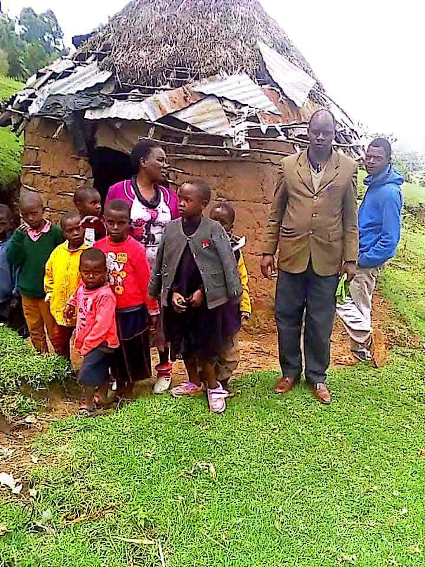
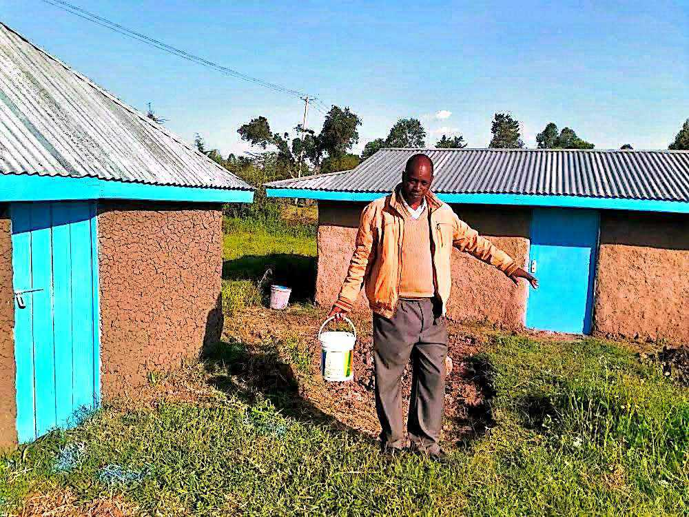
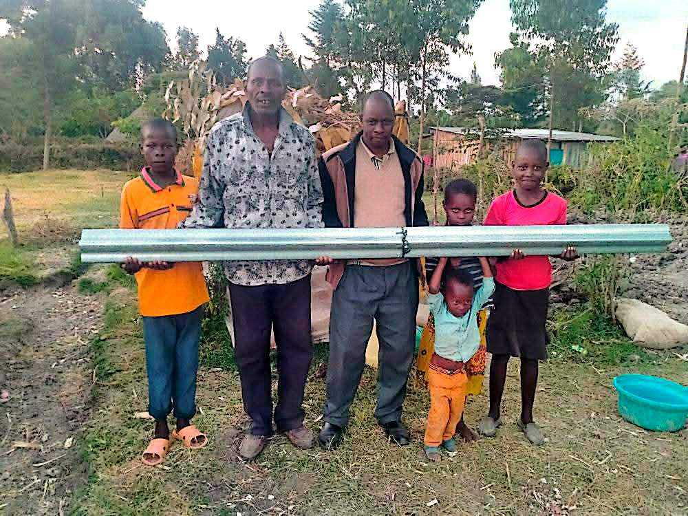
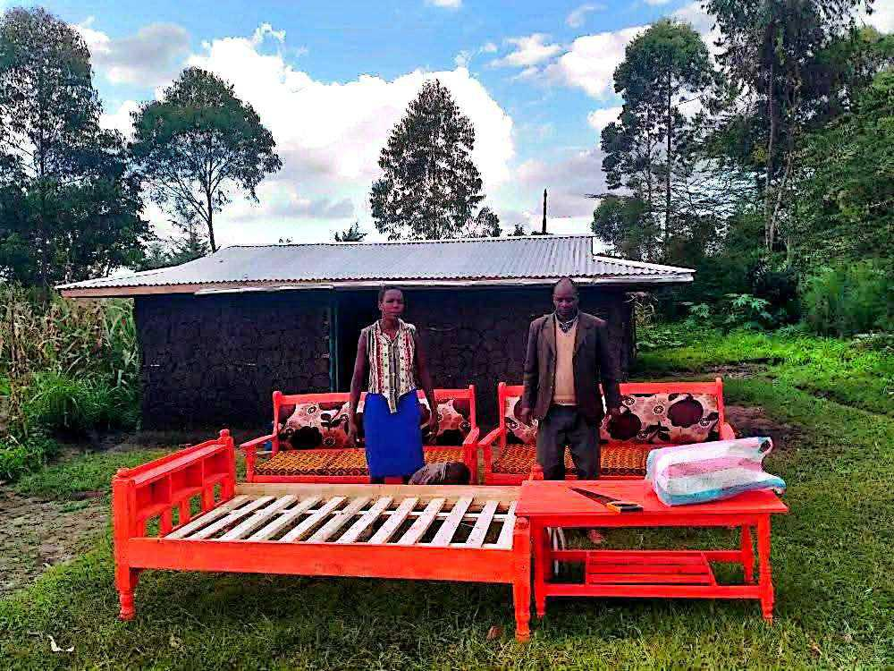
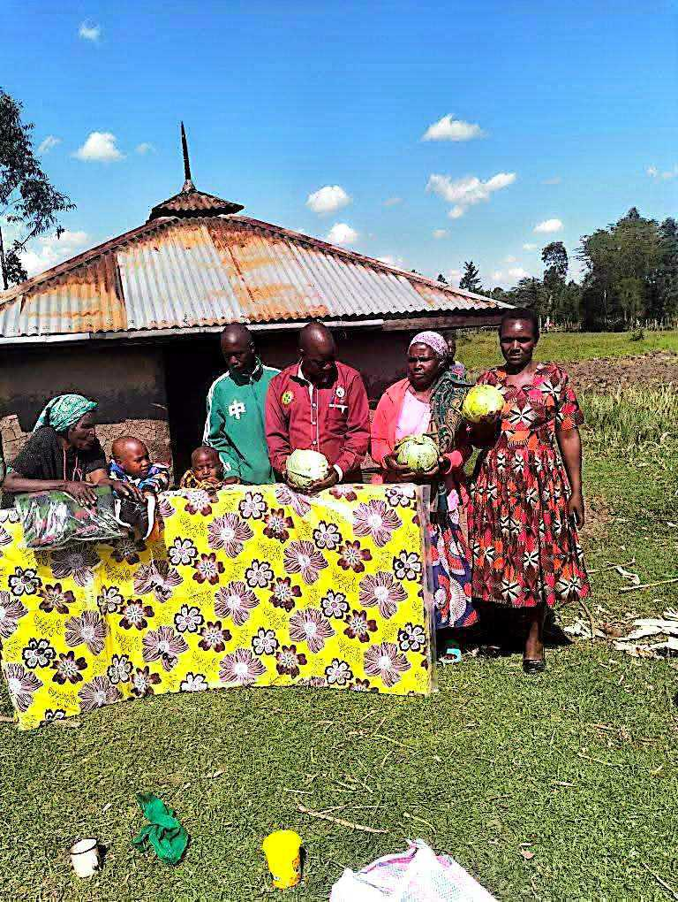

Starting point
The family's existing shelter, before support began.
Practical help where it matters most
Individual, dated project case studies (location, beneficiaries, evidence) are being catalogued and will be published here as documentation is confirmed. The five programme areas below are already part of Daniel's documented record.
01 · Mobility & assistive devices
Facilitating access to wheelchairs, white canes, artificial limbs and other mobility support for people who would otherwise go without. This is the programme area Daniel's work began with, and it remains the most consistently documented.
Featured example: a pupil at Kaling Primary School who had previously been carried roughly three kilometres to school was provided with a wheelchair, changing daily attendance from dependent on another child's back to independent.


02 · Inclusive education
Helping children with disabilities overcome physical, financial and social barriers to school access and participation — from mobility support to advocacy with school administrations and local authorities.
This work is grounded in Daniel's own career at Kamorir Primary School, where he has served as a teacher since 2010 and held both Acting Head Teacher and Acting Deputy Head Teacher roles — giving him a practical, inside view of what inclusion requires at school level.
03 · School water & sanitation
Supporting water tanks, rainwater harvesting and sanitation initiatives in schools, addressing one of the more overlooked reasons children — particularly girls — miss school or drop out.

04 · Eye health
Connecting people requiring eye care with organisations and facilities able to provide assistance, using the same network of well-wishers and partners that supports the mobility work.
05 · Community support
Beyond the four named pillars, Daniel and his network respond to individual cases of hardship as they arise — mobilising resources, connecting people to organisations, and providing direct practical assistance. This is also the seed of a longer-term goal: moving communities from dependency toward opportunity.
06 · Shelter & housing support — documented project
This is the most fully documented project in the portfolio so far, with a photo record of each stage. A family living in a deteriorated mud-and-thatch structure was supported through to a rebuilt home — including furniture, roofing materials and household essentials — with the wheelchair-using member of the household present throughout construction.

The family's existing shelter, before support began.

Roofing purlins delivered to the site ahead of construction.

Volunteers raise the timber frame of the new structure.

A bed, sofas and a table delivered to furnish the rebuilt home.

Mattresses and household items transported by motorcycle over difficult terrain.

Practical food assistance provided to the household during the project.
Sanitation blocks built for a nearby school under the same visit are shown on the school water & sanitation work above. Full written case study — dates, location and outcome — will be added once confirmed with Daniel.
Next
As certificates, letters, photographs and reports are supplied, each project above will link out to its own record in the Evidence Library, and to the Daniel Mutai Foundation where a project has been formalised under the Foundation.